#1137: [MT] Remove 03/15/20 pending value
Issue number 1137
hmhoffman opened this issue on March 29, 2021, 9:59 AM PDT
State: MT
Dates affected: 03/15/20
Describe the issue: On March 15, 2020, we captured a value for Montana's Pending, but Montana did not provide this data point on any other day. To ensure that we have a consistent timeseries extending to multiple days for each data point in our historical data, we are clearing this value.
Comments
#1137: [MT] Remove 03/15/20 pending value
Issue number 1137
hmhoffman opened this issue on March 29, 2021, 9:59 AM PDT
State: MT
Dates affected: 03/15/20
Describe the issue: On March 15, 2020, we captured a value for Montana's Pending, but Montana did not provide this data point on any other day. To ensure that we have a consistent timeseries extending to multiple days for each data point in our historical data, we are clearing this value.
Comments
Rows edited: 1 MT 2020-03-15 pending: None (was 57)
#1133: [MT] Fill initial month of PCR testing time series using collected data
Issue number 1133
theomichel opened this issue on March 5, 2021, 1:50 PM PST
Labels Data quality stale
Our totalTestsViral time series for Montana goes back to 3/28/2020. This was populated by a backfill in august using a time series provided by the state. However, we have additional data which we collected back to 3/7/2020 (stored in our negative and positive columns), and we have screenshot evidence for this data.
We will go ahead and copy this data (sum negative+positive) into the totalTestsViral column, for each day 3/7 to 3/27. This will enable us to switch MT's totalTestResults column refer directly to totalTestsViral.
The only concern with this early data from the state is that it was unclear whether the data was for unique people tested, or specimens tested. However, because its was so early in the pandemic and testing was scarce, we believe that re-testing was rare, and thus unique people and specimens tested would have been very similar numbers.
Comments
Done, with some modifications versus the plan described above:
- 3/07 to 3/20: from totaltestresults, which was based off explicit negatives+positives
- 3/21 to 3/27: from screenshots of total people tested or tests. (except 3/22 and 3/23: carry forward due to no data / screenshots)
Also, deleted all values from the negatives column back to 3/20, which is the last time we collected explicit negatives from the state. We no longer need the negatives column in general, because we'll be switching to get totalTestResults from totalTestsViral.
MT-TLM-20210306-before.csv.txt MT-TLM-20210306-after.csv.txt
This issue has been automatically marked as stale because it has not had recent activity. It will be closed if no further activity occurs. Thank you for your contributions!
This issue has been closed because it was stale for 15 days, and there was no further activity on it for 10 days. You can feel free to re-open it if the issue is important, and label it as "not stale."
#1133: [MT] Fill initial month of PCR testing time series using collected data
Issue number 1133
theomichel opened this issue on March 5, 2021, 1:50 PM PST
Labels Data quality stale
Our totalTestsViral time series for Montana goes back to 3/28/2020. This was populated by a backfill in august using a time series provided by the state. However, we have additional data which we collected back to 3/7/2020 (stored in our negative and positive columns), and we have screenshot evidence for this data.
We will go ahead and copy this data (sum negative+positive) into the totalTestsViral column, for each day 3/7 to 3/27. This will enable us to switch MT's totalTestResults column refer directly to totalTestsViral.
The only concern with this early data from the state is that it was unclear whether the data was for unique people tested, or specimens tested. However, because its was so early in the pandemic and testing was scarce, we believe that re-testing was rare, and thus unique people and specimens tested would have been very similar numbers.
Comments
Done, with some modifications versus the plan described above:
- 3/07 to 3/20: from totaltestresults, which was based off explicit negatives+positives
- 3/21 to 3/27: from screenshots of total people tested or tests. (except 3/22 and 3/23: carry forward due to no data / screenshots)
Also, deleted all values from the negatives column back to 3/20, which is the last time we collected explicit negatives from the state. We no longer need the negatives column in general, because we'll be switching to get totalTestResults from totalTestsViral.
MT-TLM-20210306-before.csv.txt MT-TLM-20210306-after.csv.txt
This issue has been automatically marked as stale because it has not had recent activity. It will be closed if no further activity occurs. Thank you for your contributions!
This issue has been closed because it was stale for 15 days, and there was no further activity on it for 10 days. You can feel free to re-open it if the issue is important, and label it as "not stale."
#1080: [MT] Remove 12/01/20 Total PCR tests (people)
Issue number 1080
hmhoffman opened this issue on January 27, 2021, 8:12 AM PST
State: MT
Dates affected: 12/01/20
Describe the issue: On December 1, 2020, we accidentally captured a number for Montana's Total PCR tests. Montana does not currently report this metric, and we corrected the error and removed this number from our timeseries on January 27, 2021.
Comments
Rows edited: 1 MT 2020-12-01 totalTestsPeopleViral: None (was 660895)
#1080: [MT] Remove 12/01/20 Total PCR tests (people)
Issue number 1080
hmhoffman opened this issue on January 27, 2021, 8:12 AM PST
State: MT
Dates affected: 12/01/20
Describe the issue: On December 1, 2020, we accidentally captured a number for Montana's Total PCR tests. Montana does not currently report this metric, and we corrected the error and removed this number from our timeseries on January 27, 2021.
Comments
Rows edited: 1 MT 2020-12-01 totalTestsPeopleViral: None (was 660895)
#1079: [MT] Clear Confirmed cases timeseries
Issue number 1079
hmhoffman opened this issue on January 27, 2021, 7:44 AM PST
State: MT
Dates affected: 4/30/20-01/26/21
Describe the issue: On January 26, 2021, Montana reported that they include a breakdown of confirmed and probable cases on a report linked in the demographics tab of their dashboard. After further investigation, we determined that the Confirmed cases number we had been capturing included both confirmed and probable cases. On January 27, 2021, we cleared our entire Confirmed cases timeseries from April 30, 2020 through January 26, 2021. Beginning on January 27, 2021, we will capture Confirmed cases and Probable cases from the report linked in the demographics tab of their dashboard, and will backfill our timeseries as we are able to.
Comments
Rows edited: 272 MT 2021-01-26 positiveCasesViral: None (was 92160) MT 2021-01-25 positiveCasesViral: None (was 91816) MT 2021-01-24 positiveCasesViral: None (was 91652) MT 2021-01-23 positiveCasesViral: None (was 91410) MT 2021-01-22 positiveCasesViral: None (was 91049) MT 2021-01-21 positiveCasesViral: None (was 90649) MT 2021-01-20 positiveCasesViral: None (was 90255) MT 2021-01-19 positiveCasesViral: None (was 89864) MT 2021-01-18 positiveCasesViral: None (was 89576) MT 2021-01-17 positiveCasesViral: None (was 89393) MT 2021-01-16 positiveCasesViral: None (was 89056) MT 2021-01-15 positiveCasesViral: None (was 88635) MT 2021-01-14 positiveCasesViral: None (was 88110) MT 2021-01-13 positiveCasesViral: None (was 87653) MT 2021-01-12 positiveCasesViral: None (was 87077) MT 2021-01-11 positiveCasesViral: None (was 86653) MT 2021-01-10 positiveCasesViral: None (was 86324) MT 2021-01-09 positiveCasesViral: None (was 86102) MT 2021-01-08 positiveCasesViral: None (was 85568) MT 2021-01-07 positiveCasesViral: None (was 84750) MT 2021-01-06 positiveCasesViral: None (was 84060) MT 2021-01-05 positiveCasesViral: None (was 83378) MT 2021-01-04 positiveCasesViral: None (was 82664) MT 2021-01-03 positiveCasesViral: None (was 82381) MT 2021-01-02 positiveCasesViral: None (was 81944) MT 2021-01-01 positiveCasesViral: None (was 81555) MT 2020-12-31 positiveCasesViral: None (was 81555) MT 2020-12-30 positiveCasesViral: None (was 81300) MT 2020-12-29 positiveCasesViral: None (was 80426) MT 2020-12-28 positiveCasesViral: None (was 79999) MT 2020-12-27 positiveCasesViral: None (was 79780) MT 2020-12-26 positiveCasesViral: None (was 79433) MT 2020-12-25 positiveCasesViral: None (was 78929) MT 2020-12-24 positiveCasesViral: None (was 78929) MT 2020-12-23 positiveCasesViral: None (was 78522) MT 2020-12-22 positiveCasesViral: None (was 77947) MT 2020-12-21 positiveCasesViral: None (was 77324) MT 2020-12-20 positiveCasesViral: None (was 77170) MT 2020-12-19 positiveCasesViral: None (was 76619) MT 2020-12-18 positiveCasesViral: None (was 75992) MT 2020-12-17 positiveCasesViral: None (was 75483) MT 2020-12-16 positiveCasesViral: None (was 74644) MT 2020-12-15 positiveCasesViral: None (was 74040) MT 2020-12-14 positiveCasesViral: None (was 73303) MT 2020-12-13 positiveCasesViral: None (was 73303) MT 2020-12-12 positiveCasesViral: None (was 72644) MT 2020-12-11 positiveCasesViral: None (was 71870) MT 2020-12-10 positiveCasesViral: None (was 70892) MT 2020-12-09 positiveCasesViral: None (was 70133) MT 2020-12-08 positiveCasesViral: None (was 69346) MT 2020-12-07 positiveCasesViral: None (was 68591) MT 2020-12-06 positiveCasesViral: None (was 67875) MT 2020-12-05 positiveCasesViral: None (was 67069) MT 2020-12-04 positiveCasesViral: None (was 66436) MT 2020-12-03 positiveCasesViral: None (was 65122) MT 2020-12-02 positiveCasesViral: None (was 64340) MT 2020-12-01 positiveCasesViral: None (was 63205) MT 2020-11-30 positiveCasesViral: None (was 62198) MT 2020-11-29 positiveCasesViral: None (was 61801) MT 2020-11-28 positiveCasesViral: None (was 60845) MT 2020-11-27 positiveCasesViral: None (was 59796) MT 2020-11-26 positiveCasesViral: None (was 59682) MT 2020-11-25 positiveCasesViral: None (was 58565) MT 2020-11-24 positiveCasesViral: None (was 57504) MT 2020-11-23 positiveCasesViral: None (was 56381) MT 2020-11-22 positiveCasesViral: None (was 55680) MT 2020-11-21 positiveCasesViral: None (was 54542) MT 2020-11-20 positiveCasesViral: None (was 53293) MT 2020-11-19 positiveCasesViral: None (was 51818) MT 2020-11-18 positiveCasesViral: None (was 50582) MT 2020-11-17 positiveCasesViral: None (was 49398) MT 2020-11-16 positiveCasesViral: None (was 48027) MT 2020-11-15 positiveCasesViral: None (was 47158) MT 2020-11-14 positiveCasesViral: None (was 45886) MT 2020-11-13 positiveCasesViral: None (was 44244) MT 2020-11-12 positiveCasesViral: None (was 43031) MT 2020-11-11 positiveCasesViral: None (was 42070) MT 2020-11-10 positiveCasesViral: None (was 41151) MT 2020-11-09 positiveCasesViral: None (was 40053) MT 2020-11-08 positiveCasesViral: None (was 39679) MT 2020-11-07 positiveCasesViral: None (was 38948) MT 2020-11-06 positiveCasesViral: None (was 37947) MT 2020-11-05 positiveCasesViral: None (was 36968) MT 2020-11-04 positiveCasesViral: None (was 35955) MT 2020-11-03 positiveCasesViral: None (was 35159) MT 2020-11-02 positiveCasesViral: None (was 34252) MT 2020-11-01 positiveCasesViral: None (was 33495) MT 2020-10-31 positiveCasesViral: None (was 32801) MT 2020-10-30 positiveCasesViral: None (was 31916) MT 2020-10-29 positiveCasesViral: None (was 30853) MT 2020-10-28 positiveCasesViral: None (was 29966) MT 2020-10-27 positiveCasesViral: None (was 29346) MT 2020-10-26 positiveCasesViral: None (was 28501) MT 2020-10-25 positiveCasesViral: None (was 27880) MT 2020-10-24 positiveCasesViral: None (was 27142) MT 2020-10-23 positiveCasesViral: None (was 26503) MT 2020-10-22 positiveCasesViral: None (was 25640) MT 2020-10-21 positiveCasesViral: None (was 24712) MT 2020-10-20 positiveCasesViral: None (was 24093) MT 2020-10-19 positiveCasesViral: None (was 23390) MT 2020-10-18 positiveCasesViral: None (was 22821) MT 2020-10-17 positiveCasesViral: None (was 22233) MT 2020-10-16 positiveCasesViral: None (was 21595) MT 2020-10-15 positiveCasesViral: None (was 20933) MT 2020-10-14 positiveCasesViral: None (was 20210) MT 2020-10-13 positiveCasesViral: None (was 19611) MT 2020-10-12 positiveCasesViral: None (was 19125) MT 2020-10-11 positiveCasesViral: None (was 18702) MT 2020-10-10 positiveCasesViral: None (was 18117) MT 2020-10-09 positiveCasesViral: None (was 17399) MT 2020-10-08 positiveCasesViral: None (was 16677) MT 2020-10-07 positiveCasesViral: None (was 16063) MT 2020-10-06 positiveCasesViral: None (was 15347) MT 2020-10-05 positiveCasesViral: None (was 14847) MT 2020-10-04 positiveCasesViral: None (was 14635) MT 2020-10-03 positiveCasesViral: None (was 14356) MT 2020-10-02 positiveCasesViral: None (was 13855) MT 2020-10-01 positiveCasesViral: None (was 13500) MT 2020-09-30 positiveCasesViral: None (was 13071) MT 2020-09-29 positiveCasesViral: None (was 12724) MT 2020-09-28 positiveCasesViral: None (was 12413) MT 2020-09-27 positiveCasesViral: None (was 12107) MT 2020-09-26 positiveCasesViral: None (was 11907) MT 2020-09-25 positiveCasesViral: None (was 11564) MT 2020-09-24 positiveCasesViral: None (was 11242) MT 2020-09-23 positiveCasesViral: None (was 10912) MT 2020-09-22 positiveCasesViral: None (was 10700) MT 2020-09-21 positiveCasesViral: None (was 10429) MT 2020-09-20 positiveCasesViral: None (was 10299) MT 2020-09-19 positiveCasesViral: None (was 10163) MT 2020-09-18 positiveCasesViral: None (was 9871) MT 2020-09-17 positiveCasesViral: None (was 9647) MT 2020-09-16 positiveCasesViral: None (was 9431) MT 2020-09-15 positiveCasesViral: None (was 9244) MT 2020-09-14 positiveCasesViral: None (was 9107) MT 2020-09-13 positiveCasesViral: None (was 9021) MT 2020-09-12 positiveCasesViral: None (was 8925) MT 2020-09-11 positiveCasesViral: None (was 8785) MT 2020-09-10 positiveCasesViral: None (was 8663) MT 2020-09-09 positiveCasesViral: None (was 8468) MT 2020-09-08 positiveCasesViral: None (was 8381) MT 2020-09-07 positiveCasesViral: None (was 8316) MT 2020-09-06 positiveCasesViral: None (was 8264) MT 2020-09-05 positiveCasesViral: None (was 8164) MT 2020-09-04 positiveCasesViral: None (was 8019) MT 2020-09-03 positiveCasesViral: None (was 7871) MT 2020-09-02 positiveCasesViral: None (was 7691) MT 2020-09-01 positiveCasesViral: None (was 7509) MT 2020-08-31 positiveCasesViral: None (was 7421) MT 2020-08-30 positiveCasesViral: None (was 7340) MT 2020-08-29 positiveCasesViral: None (was 7251) MT 2020-08-28 positiveCasesViral: None (was 7063) MT 2020-08-27 positiveCasesViral: None (was 6929) MT 2020-08-26 positiveCasesViral: None (was 6785) MT 2020-08-25 positiveCasesViral: None (was 6624) MT 2020-08-24 positiveCasesViral: None (was 6489) MT 2020-08-23 positiveCasesViral: None (was 6429) MT 2020-08-22 positiveCasesViral: None (was 6376) MT 2020-08-21 positiveCasesViral: None (was 6216) MT 2020-08-20 positiveCasesViral: None (was 6072) MT 2020-08-19 positiveCasesViral: None (was 5956) MT 2020-08-18 positiveCasesViral: None (was 5846) MT 2020-08-17 positiveCasesViral: None (was 5792) MT 2020-08-16 positiveCasesViral: None (was 5750) MT 2020-08-15 positiveCasesViral: None (was 5659) MT 2020-08-14 positiveCasesViral: None (was 5541) MT 2020-08-13 positiveCasesViral: None (was 5407) MT 2020-08-12 positiveCasesViral: None (was 5268) MT 2020-08-11 positiveCasesViral: None (was 5104) MT 2020-08-10 positiveCasesViral: None (was 5017) MT 2020-08-09 positiveCasesViral: None (was 4952) MT 2020-08-08 positiveCasesViral: None (was 4889) MT 2020-08-07 positiveCasesViral: None (was 4757) MT 2020-08-06 positiveCasesViral: None (was 4602) MT 2020-08-05 positiveCasesViral: None (was 4429) MT 2020-08-04 positiveCasesViral: None (was 4314) MT 2020-08-03 positiveCasesViral: None (was 4233) MT 2020-08-02 positiveCasesViral: None (was 4193) MT 2020-08-01 positiveCasesViral: None (was 4081) MT 2020-07-31 positiveCasesViral: None (was 3965) MT 2020-07-30 positiveCasesViral: None (was 3814) MT 2020-07-29 positiveCasesViral: None (was 3676) MT 2020-07-28 positiveCasesViral: None (was 3475) MT 2020-07-27 positiveCasesViral: None (was 3381) MT 2020-07-26 positiveCasesViral: None (was 3342) MT 2020-07-25 positiveCasesViral: None (was 3260) MT 2020-07-24 positiveCasesViral: None (was 3039) MT 2020-07-23 positiveCasesViral: None (was 2910) MT 2020-07-22 positiveCasesViral: None (was 2813) MT 2020-07-21 positiveCasesViral: None (was 2712) MT 2020-07-20 positiveCasesViral: None (was 2621) MT 2020-07-19 positiveCasesViral: None (was 2533) MT 2020-07-18 positiveCasesViral: None (was 2471) MT 2020-07-17 positiveCasesViral: None (was 2366) MT 2020-07-16 positiveCasesViral: None (was 2231) MT 2020-07-15 positiveCasesViral: None (was 2096) MT 2020-07-14 positiveCasesViral: None (was 1952) MT 2020-07-13 positiveCasesViral: None (was 1843) MT 2020-07-12 positiveCasesViral: None (was 1758) MT 2020-07-11 positiveCasesViral: None (was 1677) MT 2020-07-10 positiveCasesViral: None (was 1593) MT 2020-07-09 positiveCasesViral: None (was 1466) MT 2020-07-08 positiveCasesViral: None (was 1371) MT 2020-07-07 positiveCasesViral: None (was 1327) MT 2020-07-06 positiveCasesViral: None (was 1249) MT 2020-07-05 positiveCasesViral: None (was 1212) MT 2020-07-04 positiveCasesViral: None (was 1167) MT 2020-07-03 positiveCasesViral: None (was 1128) MT 2020-07-02 positiveCasesViral: None (was 1083) MT 2020-07-01 positiveCasesViral: None (was 1016) MT 2020-06-30 positiveCasesViral: None (was 967) MT 2020-06-29 positiveCasesViral: None (was 919) MT 2020-06-28 positiveCasesViral: None (was 863) MT 2020-06-27 positiveCasesViral: None (was 852) MT 2020-06-26 positiveCasesViral: None (was 829) MT 2020-06-25 positiveCasesViral: None (was 803) MT 2020-06-24 positiveCasesViral: None (was 766) MT 2020-06-23 positiveCasesViral: None (was 743) MT 2020-06-22 positiveCasesViral: None (was 740) MT 2020-06-21 positiveCasesViral: None (was 717) MT 2020-06-20 positiveCasesViral: None (was 698) MT 2020-06-19 positiveCasesViral: None (was 666) MT 2020-06-18 positiveCasesViral: None (was 655) MT 2020-06-17 positiveCasesViral: None (was 630) MT 2020-06-16 positiveCasesViral: None (was 614) MT 2020-06-15 positiveCasesViral: None (was 609) MT 2020-06-14 positiveCasesViral: None (was 601) MT 2020-06-13 positiveCasesViral: None (was 588) MT 2020-06-12 positiveCasesViral: None (was 573) MT 2020-06-11 positiveCasesViral: None (was 563) MT 2020-06-10 positiveCasesViral: None (was 561) MT 2020-06-09 positiveCasesViral: None (was 554) MT 2020-06-08 positiveCasesViral: None (was 548) MT 2020-06-07 positiveCasesViral: None (was 545) MT 2020-06-06 positiveCasesViral: None (was 540) MT 2020-06-05 positiveCasesViral: None (was 541) MT 2020-06-04 positiveCasesViral: None (was 539) MT 2020-06-03 positiveCasesViral: None (was 525) MT 2020-06-02 positiveCasesViral: None (was 523) MT 2020-06-01 positiveCasesViral: None (was 519) MT 2020-05-31 positiveCasesViral: None (was 515) MT 2020-05-30 positiveCasesViral: None (was 493) MT 2020-05-29 positiveCasesViral: None (was 493) MT 2020-05-28 positiveCasesViral: None (was 485) MT 2020-05-27 positiveCasesViral: None (was 481) MT 2020-05-26 positiveCasesViral: None (was 479) MT 2020-05-25 positiveCasesViral: None (was 479) MT 2020-05-24 positiveCasesViral: None (was 479) MT 2020-05-23 positiveCasesViral: None (was 479) MT 2020-05-22 positiveCasesViral: None (was 479) MT 2020-05-21 positiveCasesViral: None (was 479) MT 2020-05-20 positiveCasesViral: None (was 478) MT 2020-05-19 positiveCasesViral: None (was 471) MT 2020-05-18 positiveCasesViral: None (was 470) MT 2020-05-17 positiveCasesViral: None (was 468) MT 2020-05-16 positiveCasesViral: None (was 468) MT 2020-05-15 positiveCasesViral: None (was 466) MT 2020-05-14 positiveCasesViral: None (was 462) MT 2020-05-13 positiveCasesViral: None (was 462) MT 2020-05-12 positiveCasesViral: None (was 461) MT 2020-05-11 positiveCasesViral: None (was 459) MT 2020-05-10 positiveCasesViral: None (was 458) MT 2020-05-09 positiveCasesViral: None (was 458) MT 2020-05-08 positiveCasesViral: None (was 458) MT 2020-05-07 positiveCasesViral: None (was 456) MT 2020-05-06 positiveCasesViral: None (was 456) MT 2020-05-05 positiveCasesViral: None (was 456) MT 2020-05-04 positiveCasesViral: None (was 457) MT 2020-05-03 positiveCasesViral: None (was 455) MT 2020-05-02 positiveCasesViral: None (was 455) MT 2020-05-01 positiveCasesViral: None (was 453) MT 2020-04-30 positiveCasesViral: None (was 453)
#1079: [MT] Clear Confirmed cases timeseries
Issue number 1079
hmhoffman opened this issue on January 27, 2021, 7:44 AM PST
State: MT
Dates affected: 4/30/20-01/26/21
Describe the issue: On January 26, 2021, Montana reported that they include a breakdown of confirmed and probable cases on a report linked in the demographics tab of their dashboard. After further investigation, we determined that the Confirmed cases number we had been capturing included both confirmed and probable cases. On January 27, 2021, we cleared our entire Confirmed cases timeseries from April 30, 2020 through January 26, 2021. Beginning on January 27, 2021, we will capture Confirmed cases and Probable cases from the report linked in the demographics tab of their dashboard, and will backfill our timeseries as we are able to.
Comments
Rows edited: 272 MT 2021-01-26 positiveCasesViral: None (was 92160) MT 2021-01-25 positiveCasesViral: None (was 91816) MT 2021-01-24 positiveCasesViral: None (was 91652) MT 2021-01-23 positiveCasesViral: None (was 91410) MT 2021-01-22 positiveCasesViral: None (was 91049) MT 2021-01-21 positiveCasesViral: None (was 90649) MT 2021-01-20 positiveCasesViral: None (was 90255) MT 2021-01-19 positiveCasesViral: None (was 89864) MT 2021-01-18 positiveCasesViral: None (was 89576) MT 2021-01-17 positiveCasesViral: None (was 89393) MT 2021-01-16 positiveCasesViral: None (was 89056) MT 2021-01-15 positiveCasesViral: None (was 88635) MT 2021-01-14 positiveCasesViral: None (was 88110) MT 2021-01-13 positiveCasesViral: None (was 87653) MT 2021-01-12 positiveCasesViral: None (was 87077) MT 2021-01-11 positiveCasesViral: None (was 86653) MT 2021-01-10 positiveCasesViral: None (was 86324) MT 2021-01-09 positiveCasesViral: None (was 86102) MT 2021-01-08 positiveCasesViral: None (was 85568) MT 2021-01-07 positiveCasesViral: None (was 84750) MT 2021-01-06 positiveCasesViral: None (was 84060) MT 2021-01-05 positiveCasesViral: None (was 83378) MT 2021-01-04 positiveCasesViral: None (was 82664) MT 2021-01-03 positiveCasesViral: None (was 82381) MT 2021-01-02 positiveCasesViral: None (was 81944) MT 2021-01-01 positiveCasesViral: None (was 81555) MT 2020-12-31 positiveCasesViral: None (was 81555) MT 2020-12-30 positiveCasesViral: None (was 81300) MT 2020-12-29 positiveCasesViral: None (was 80426) MT 2020-12-28 positiveCasesViral: None (was 79999) MT 2020-12-27 positiveCasesViral: None (was 79780) MT 2020-12-26 positiveCasesViral: None (was 79433) MT 2020-12-25 positiveCasesViral: None (was 78929) MT 2020-12-24 positiveCasesViral: None (was 78929) MT 2020-12-23 positiveCasesViral: None (was 78522) MT 2020-12-22 positiveCasesViral: None (was 77947) MT 2020-12-21 positiveCasesViral: None (was 77324) MT 2020-12-20 positiveCasesViral: None (was 77170) MT 2020-12-19 positiveCasesViral: None (was 76619) MT 2020-12-18 positiveCasesViral: None (was 75992) MT 2020-12-17 positiveCasesViral: None (was 75483) MT 2020-12-16 positiveCasesViral: None (was 74644) MT 2020-12-15 positiveCasesViral: None (was 74040) MT 2020-12-14 positiveCasesViral: None (was 73303) MT 2020-12-13 positiveCasesViral: None (was 73303) MT 2020-12-12 positiveCasesViral: None (was 72644) MT 2020-12-11 positiveCasesViral: None (was 71870) MT 2020-12-10 positiveCasesViral: None (was 70892) MT 2020-12-09 positiveCasesViral: None (was 70133) MT 2020-12-08 positiveCasesViral: None (was 69346) MT 2020-12-07 positiveCasesViral: None (was 68591) MT 2020-12-06 positiveCasesViral: None (was 67875) MT 2020-12-05 positiveCasesViral: None (was 67069) MT 2020-12-04 positiveCasesViral: None (was 66436) MT 2020-12-03 positiveCasesViral: None (was 65122) MT 2020-12-02 positiveCasesViral: None (was 64340) MT 2020-12-01 positiveCasesViral: None (was 63205) MT 2020-11-30 positiveCasesViral: None (was 62198) MT 2020-11-29 positiveCasesViral: None (was 61801) MT 2020-11-28 positiveCasesViral: None (was 60845) MT 2020-11-27 positiveCasesViral: None (was 59796) MT 2020-11-26 positiveCasesViral: None (was 59682) MT 2020-11-25 positiveCasesViral: None (was 58565) MT 2020-11-24 positiveCasesViral: None (was 57504) MT 2020-11-23 positiveCasesViral: None (was 56381) MT 2020-11-22 positiveCasesViral: None (was 55680) MT 2020-11-21 positiveCasesViral: None (was 54542) MT 2020-11-20 positiveCasesViral: None (was 53293) MT 2020-11-19 positiveCasesViral: None (was 51818) MT 2020-11-18 positiveCasesViral: None (was 50582) MT 2020-11-17 positiveCasesViral: None (was 49398) MT 2020-11-16 positiveCasesViral: None (was 48027) MT 2020-11-15 positiveCasesViral: None (was 47158) MT 2020-11-14 positiveCasesViral: None (was 45886) MT 2020-11-13 positiveCasesViral: None (was 44244) MT 2020-11-12 positiveCasesViral: None (was 43031) MT 2020-11-11 positiveCasesViral: None (was 42070) MT 2020-11-10 positiveCasesViral: None (was 41151) MT 2020-11-09 positiveCasesViral: None (was 40053) MT 2020-11-08 positiveCasesViral: None (was 39679) MT 2020-11-07 positiveCasesViral: None (was 38948) MT 2020-11-06 positiveCasesViral: None (was 37947) MT 2020-11-05 positiveCasesViral: None (was 36968) MT 2020-11-04 positiveCasesViral: None (was 35955) MT 2020-11-03 positiveCasesViral: None (was 35159) MT 2020-11-02 positiveCasesViral: None (was 34252) MT 2020-11-01 positiveCasesViral: None (was 33495) MT 2020-10-31 positiveCasesViral: None (was 32801) MT 2020-10-30 positiveCasesViral: None (was 31916) MT 2020-10-29 positiveCasesViral: None (was 30853) MT 2020-10-28 positiveCasesViral: None (was 29966) MT 2020-10-27 positiveCasesViral: None (was 29346) MT 2020-10-26 positiveCasesViral: None (was 28501) MT 2020-10-25 positiveCasesViral: None (was 27880) MT 2020-10-24 positiveCasesViral: None (was 27142) MT 2020-10-23 positiveCasesViral: None (was 26503) MT 2020-10-22 positiveCasesViral: None (was 25640) MT 2020-10-21 positiveCasesViral: None (was 24712) MT 2020-10-20 positiveCasesViral: None (was 24093) MT 2020-10-19 positiveCasesViral: None (was 23390) MT 2020-10-18 positiveCasesViral: None (was 22821) MT 2020-10-17 positiveCasesViral: None (was 22233) MT 2020-10-16 positiveCasesViral: None (was 21595) MT 2020-10-15 positiveCasesViral: None (was 20933) MT 2020-10-14 positiveCasesViral: None (was 20210) MT 2020-10-13 positiveCasesViral: None (was 19611) MT 2020-10-12 positiveCasesViral: None (was 19125) MT 2020-10-11 positiveCasesViral: None (was 18702) MT 2020-10-10 positiveCasesViral: None (was 18117) MT 2020-10-09 positiveCasesViral: None (was 17399) MT 2020-10-08 positiveCasesViral: None (was 16677) MT 2020-10-07 positiveCasesViral: None (was 16063) MT 2020-10-06 positiveCasesViral: None (was 15347) MT 2020-10-05 positiveCasesViral: None (was 14847) MT 2020-10-04 positiveCasesViral: None (was 14635) MT 2020-10-03 positiveCasesViral: None (was 14356) MT 2020-10-02 positiveCasesViral: None (was 13855) MT 2020-10-01 positiveCasesViral: None (was 13500) MT 2020-09-30 positiveCasesViral: None (was 13071) MT 2020-09-29 positiveCasesViral: None (was 12724) MT 2020-09-28 positiveCasesViral: None (was 12413) MT 2020-09-27 positiveCasesViral: None (was 12107) MT 2020-09-26 positiveCasesViral: None (was 11907) MT 2020-09-25 positiveCasesViral: None (was 11564) MT 2020-09-24 positiveCasesViral: None (was 11242) MT 2020-09-23 positiveCasesViral: None (was 10912) MT 2020-09-22 positiveCasesViral: None (was 10700) MT 2020-09-21 positiveCasesViral: None (was 10429) MT 2020-09-20 positiveCasesViral: None (was 10299) MT 2020-09-19 positiveCasesViral: None (was 10163) MT 2020-09-18 positiveCasesViral: None (was 9871) MT 2020-09-17 positiveCasesViral: None (was 9647) MT 2020-09-16 positiveCasesViral: None (was 9431) MT 2020-09-15 positiveCasesViral: None (was 9244) MT 2020-09-14 positiveCasesViral: None (was 9107) MT 2020-09-13 positiveCasesViral: None (was 9021) MT 2020-09-12 positiveCasesViral: None (was 8925) MT 2020-09-11 positiveCasesViral: None (was 8785) MT 2020-09-10 positiveCasesViral: None (was 8663) MT 2020-09-09 positiveCasesViral: None (was 8468) MT 2020-09-08 positiveCasesViral: None (was 8381) MT 2020-09-07 positiveCasesViral: None (was 8316) MT 2020-09-06 positiveCasesViral: None (was 8264) MT 2020-09-05 positiveCasesViral: None (was 8164) MT 2020-09-04 positiveCasesViral: None (was 8019) MT 2020-09-03 positiveCasesViral: None (was 7871) MT 2020-09-02 positiveCasesViral: None (was 7691) MT 2020-09-01 positiveCasesViral: None (was 7509) MT 2020-08-31 positiveCasesViral: None (was 7421) MT 2020-08-30 positiveCasesViral: None (was 7340) MT 2020-08-29 positiveCasesViral: None (was 7251) MT 2020-08-28 positiveCasesViral: None (was 7063) MT 2020-08-27 positiveCasesViral: None (was 6929) MT 2020-08-26 positiveCasesViral: None (was 6785) MT 2020-08-25 positiveCasesViral: None (was 6624) MT 2020-08-24 positiveCasesViral: None (was 6489) MT 2020-08-23 positiveCasesViral: None (was 6429) MT 2020-08-22 positiveCasesViral: None (was 6376) MT 2020-08-21 positiveCasesViral: None (was 6216) MT 2020-08-20 positiveCasesViral: None (was 6072) MT 2020-08-19 positiveCasesViral: None (was 5956) MT 2020-08-18 positiveCasesViral: None (was 5846) MT 2020-08-17 positiveCasesViral: None (was 5792) MT 2020-08-16 positiveCasesViral: None (was 5750) MT 2020-08-15 positiveCasesViral: None (was 5659) MT 2020-08-14 positiveCasesViral: None (was 5541) MT 2020-08-13 positiveCasesViral: None (was 5407) MT 2020-08-12 positiveCasesViral: None (was 5268) MT 2020-08-11 positiveCasesViral: None (was 5104) MT 2020-08-10 positiveCasesViral: None (was 5017) MT 2020-08-09 positiveCasesViral: None (was 4952) MT 2020-08-08 positiveCasesViral: None (was 4889) MT 2020-08-07 positiveCasesViral: None (was 4757) MT 2020-08-06 positiveCasesViral: None (was 4602) MT 2020-08-05 positiveCasesViral: None (was 4429) MT 2020-08-04 positiveCasesViral: None (was 4314) MT 2020-08-03 positiveCasesViral: None (was 4233) MT 2020-08-02 positiveCasesViral: None (was 4193) MT 2020-08-01 positiveCasesViral: None (was 4081) MT 2020-07-31 positiveCasesViral: None (was 3965) MT 2020-07-30 positiveCasesViral: None (was 3814) MT 2020-07-29 positiveCasesViral: None (was 3676) MT 2020-07-28 positiveCasesViral: None (was 3475) MT 2020-07-27 positiveCasesViral: None (was 3381) MT 2020-07-26 positiveCasesViral: None (was 3342) MT 2020-07-25 positiveCasesViral: None (was 3260) MT 2020-07-24 positiveCasesViral: None (was 3039) MT 2020-07-23 positiveCasesViral: None (was 2910) MT 2020-07-22 positiveCasesViral: None (was 2813) MT 2020-07-21 positiveCasesViral: None (was 2712) MT 2020-07-20 positiveCasesViral: None (was 2621) MT 2020-07-19 positiveCasesViral: None (was 2533) MT 2020-07-18 positiveCasesViral: None (was 2471) MT 2020-07-17 positiveCasesViral: None (was 2366) MT 2020-07-16 positiveCasesViral: None (was 2231) MT 2020-07-15 positiveCasesViral: None (was 2096) MT 2020-07-14 positiveCasesViral: None (was 1952) MT 2020-07-13 positiveCasesViral: None (was 1843) MT 2020-07-12 positiveCasesViral: None (was 1758) MT 2020-07-11 positiveCasesViral: None (was 1677) MT 2020-07-10 positiveCasesViral: None (was 1593) MT 2020-07-09 positiveCasesViral: None (was 1466) MT 2020-07-08 positiveCasesViral: None (was 1371) MT 2020-07-07 positiveCasesViral: None (was 1327) MT 2020-07-06 positiveCasesViral: None (was 1249) MT 2020-07-05 positiveCasesViral: None (was 1212) MT 2020-07-04 positiveCasesViral: None (was 1167) MT 2020-07-03 positiveCasesViral: None (was 1128) MT 2020-07-02 positiveCasesViral: None (was 1083) MT 2020-07-01 positiveCasesViral: None (was 1016) MT 2020-06-30 positiveCasesViral: None (was 967) MT 2020-06-29 positiveCasesViral: None (was 919) MT 2020-06-28 positiveCasesViral: None (was 863) MT 2020-06-27 positiveCasesViral: None (was 852) MT 2020-06-26 positiveCasesViral: None (was 829) MT 2020-06-25 positiveCasesViral: None (was 803) MT 2020-06-24 positiveCasesViral: None (was 766) MT 2020-06-23 positiveCasesViral: None (was 743) MT 2020-06-22 positiveCasesViral: None (was 740) MT 2020-06-21 positiveCasesViral: None (was 717) MT 2020-06-20 positiveCasesViral: None (was 698) MT 2020-06-19 positiveCasesViral: None (was 666) MT 2020-06-18 positiveCasesViral: None (was 655) MT 2020-06-17 positiveCasesViral: None (was 630) MT 2020-06-16 positiveCasesViral: None (was 614) MT 2020-06-15 positiveCasesViral: None (was 609) MT 2020-06-14 positiveCasesViral: None (was 601) MT 2020-06-13 positiveCasesViral: None (was 588) MT 2020-06-12 positiveCasesViral: None (was 573) MT 2020-06-11 positiveCasesViral: None (was 563) MT 2020-06-10 positiveCasesViral: None (was 561) MT 2020-06-09 positiveCasesViral: None (was 554) MT 2020-06-08 positiveCasesViral: None (was 548) MT 2020-06-07 positiveCasesViral: None (was 545) MT 2020-06-06 positiveCasesViral: None (was 540) MT 2020-06-05 positiveCasesViral: None (was 541) MT 2020-06-04 positiveCasesViral: None (was 539) MT 2020-06-03 positiveCasesViral: None (was 525) MT 2020-06-02 positiveCasesViral: None (was 523) MT 2020-06-01 positiveCasesViral: None (was 519) MT 2020-05-31 positiveCasesViral: None (was 515) MT 2020-05-30 positiveCasesViral: None (was 493) MT 2020-05-29 positiveCasesViral: None (was 493) MT 2020-05-28 positiveCasesViral: None (was 485) MT 2020-05-27 positiveCasesViral: None (was 481) MT 2020-05-26 positiveCasesViral: None (was 479) MT 2020-05-25 positiveCasesViral: None (was 479) MT 2020-05-24 positiveCasesViral: None (was 479) MT 2020-05-23 positiveCasesViral: None (was 479) MT 2020-05-22 positiveCasesViral: None (was 479) MT 2020-05-21 positiveCasesViral: None (was 479) MT 2020-05-20 positiveCasesViral: None (was 478) MT 2020-05-19 positiveCasesViral: None (was 471) MT 2020-05-18 positiveCasesViral: None (was 470) MT 2020-05-17 positiveCasesViral: None (was 468) MT 2020-05-16 positiveCasesViral: None (was 468) MT 2020-05-15 positiveCasesViral: None (was 466) MT 2020-05-14 positiveCasesViral: None (was 462) MT 2020-05-13 positiveCasesViral: None (was 462) MT 2020-05-12 positiveCasesViral: None (was 461) MT 2020-05-11 positiveCasesViral: None (was 459) MT 2020-05-10 positiveCasesViral: None (was 458) MT 2020-05-09 positiveCasesViral: None (was 458) MT 2020-05-08 positiveCasesViral: None (was 458) MT 2020-05-07 positiveCasesViral: None (was 456) MT 2020-05-06 positiveCasesViral: None (was 456) MT 2020-05-05 positiveCasesViral: None (was 456) MT 2020-05-04 positiveCasesViral: None (was 457) MT 2020-05-03 positiveCasesViral: None (was 455) MT 2020-05-02 positiveCasesViral: None (was 455) MT 2020-05-01 positiveCasesViral: None (was 453) MT 2020-04-30 positiveCasesViral: None (was 453)
#971: [MT] Patch 11/23 Cur. hosp + cur. vent
Issue number 971
hmhoffman opened this issue on November 24, 2020, 11:35 AM PST
State: MT
Dates affected: 11/23
Describe the issue: On 11/24 we identified a new source for Montana's Currently in ICU and Currently on Ventilator. We will begin capturing these metrics in our daily update on 11/24. However, we were able to find the pdf for 11/23, so we are backfilling Montana's Currently in ICU and Currently on Ventilator for 11/23.
Link to source: https://webcache.googleusercontent.com/search?q=cache:A46Zvdi6eTIJ:https://dphhs.mt.gov/Portals/85/publichealth/documents/CDEpi/DiseasesAtoZ/2019-nCoV/Status%2520Update%2520Data%2520Report_11222020.pdf+&cd=1&hl=en&ct=clnk&gl=us
Comments
BEFORE: 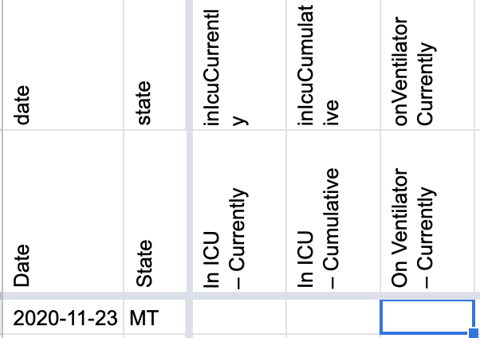
AFTER: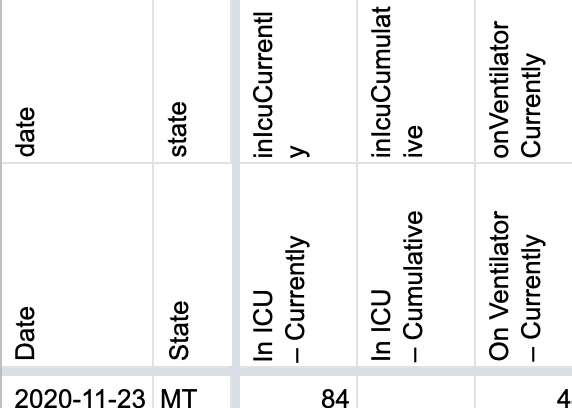
#742: [MT] Inputting Total PCR Tests (People) in Total PCR Tests since reporting units are unclear
Issue number 742
jaclyde opened this issue on August 9, 2020, 3:29 PM PDT
Labels Data quality Historical Data PCL/SVP Historicals
MT reports testing numbers in unclear units. So we are moving the Total Test data to the specimens or unclear metric from the people metric. In addition we are backfilling the Total Tests from when we started recording them to when they became available in late March.
Source for the tests data is: ArcGis Query --> MT-Tests.json.txt
- [x] Update time series with data from 5/17-3/28
- [x] Move data from the people metric to the specimens metric
Comments
BEFORE 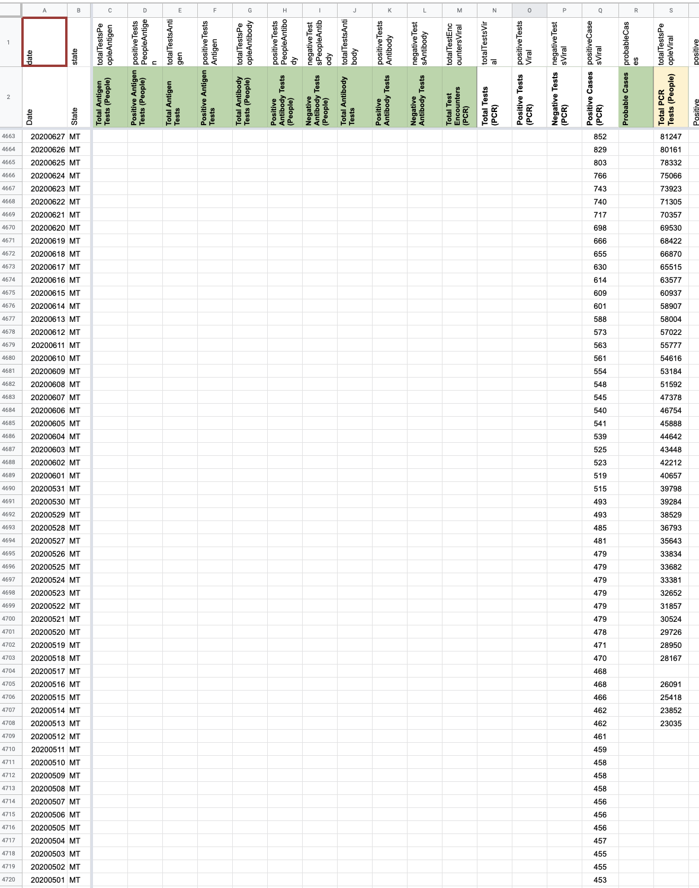
BACKFILL Analysis MT - Analysis [MT] total people PCR.pdf
After move 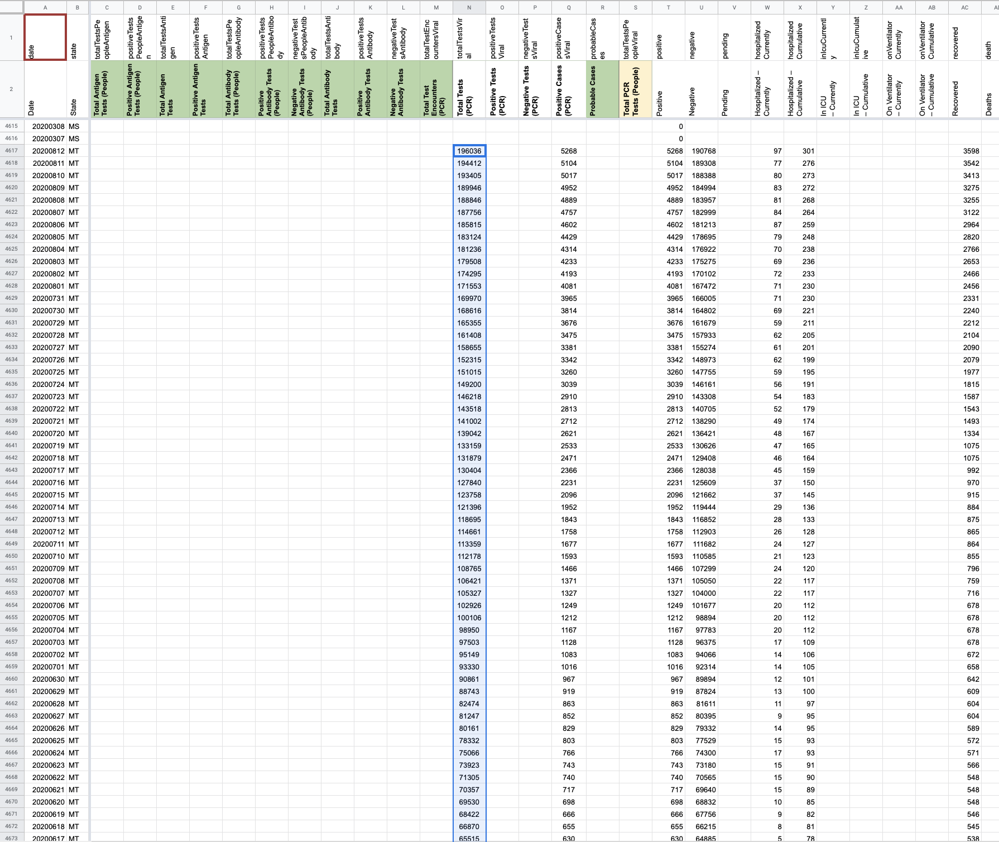
After move and backfill 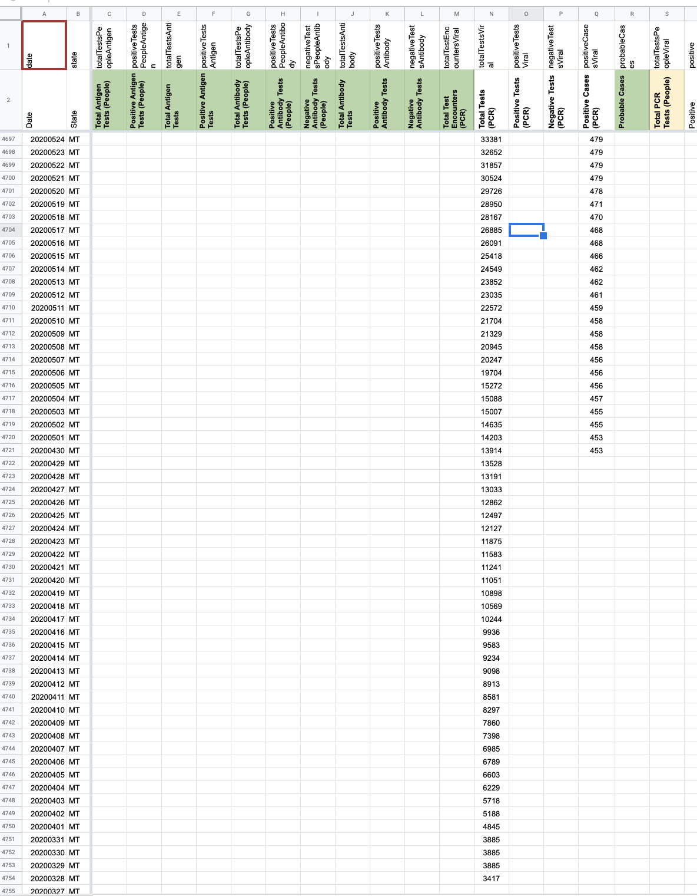
#713: [MT] PCL Historicals
Issue number 713
jesseandersonumd opened this issue on July 31, 2020, 7:53 AM PDT
Labels Backfill Historical Data No data available not stale
State: MT
Dates impacted: 3/07-4/29
Issue: We've confirmed that MT is lab-confirmed only and started reporting positive cases (PCR) on 4/29. We may be able to reasonably copy over the values from 3/07-4/29 in the positive cases (people, probable and confirmed) over to positive cases (PCR).
Comments
***Note: Our screenshots for MT show that the state began reporting explicit confirmed cases on 4/07, but it seems to imply that they were reporting confirmed cases since the beginning -- needs more investigation.
This issue has been automatically marked as stale because it has not had recent activity. It will be closed if no further activity occurs. Thank you for your contributions!
This issue has been closed because it was stale for 15 days, and there was no further activity on it for 10 days. You can feel free to re-open it if the issue is important, and label it as "not stale."
This is moot since the cases we were capturing at that point were not actually lab confirmed. We do not have a timeseries of lab confirmed cases to backfill with.
#546: [MT] PCL Historicals and WS2
Issue number 546
karaschechtman opened this issue on June 26, 2020, 7:07 AM PDT
Labels PCL/SVP Historicals
Death values are historically recorded in both the "Deaths" and "Deaths (Confirmed)" columns for MT. However, MT’s death values are unclear about what they represent, so they should only be recorded in the main "Deaths" field.
Comments
WS2 edits: 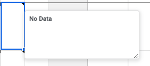 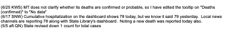
States Daily edits
Before: 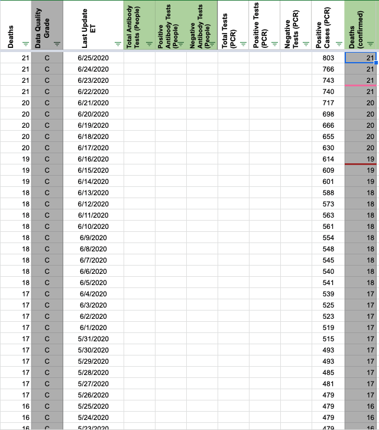 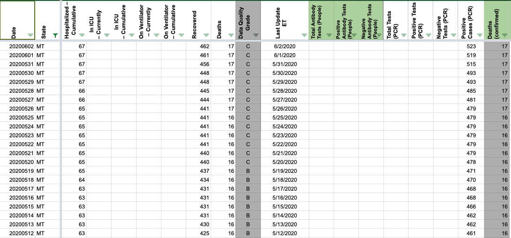 After: 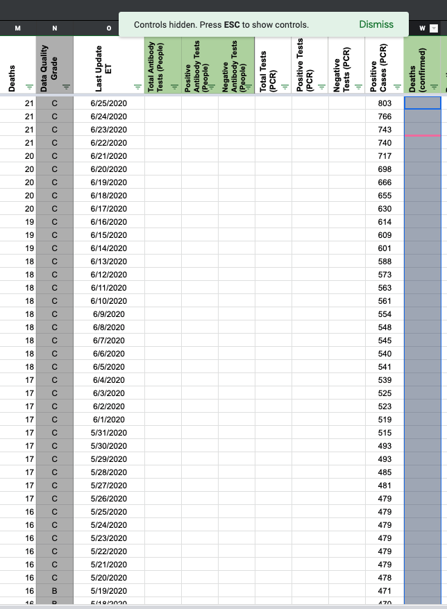 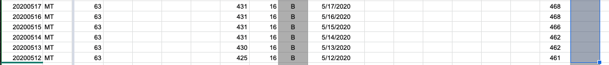
JJA DC-ed 6/26, 10:30:00 a.m. ET
#142: MT data neagative numbers
Issue number 142
ajinkya-k opened this issue on April 4, 2020, 3:41 PM PDT
The value for of totalTestResultsIncrease on 2020-03-30 for Montana is -165.0. What is the issue?
Comments
Same as #89
I searched for Montana in the issues not MT. Apologies
#89: MT: Negatives reports are lower on Mar 29 than on Mar 30
Issue number 89
Jmuccigr opened this issue on March 31, 2020, 4:09 AM PDT
Labels Data source
MT reports a lower total on March 30 than March 29 (3961 v 4143), even though they also provide a good number of tests. Since negative = total - positive, that results in a negative number of negatives, then the totalTestResultsIncrease goes negative as well.
(TBH the MT numbers on their website are confusing to me. The screen shots show totals that don't jibe with the "new tests completed" figures right above them. Maybe they're just updating the new tests every time they refresh the page?)
Comments
This issue has been automatically marked as stale because it has not had recent activity. It will be closed if no further activity occurs. Thank you for your contributions!
Hi @Jmuccigr, Thank you for pointing this out. It is common for states' reports on their total tests to lag updates on their positive tests, making it appear as if negative numbers are decreasing (since negatives are inferred through totals - positives). This lag is, I think, what you are noticing about MT's "Total Number of Tests Completed" figure sometimes appearing mismatched to their "Total Cases."
We operate on a policy of never decreasing the number of negatives day over day. Thus, in this case, we carried over the negative figure from 3/29, 4143, to 3/30 until total test updates caught up with positives on 3/31. 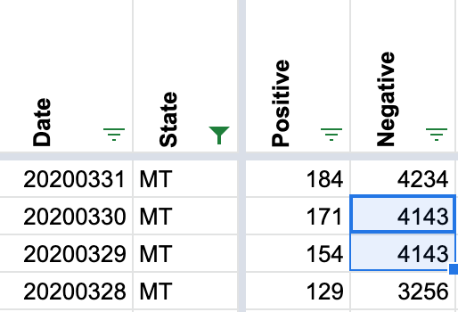
Rows edited: 1 MT 2020-03-15 pending: None (was 57)